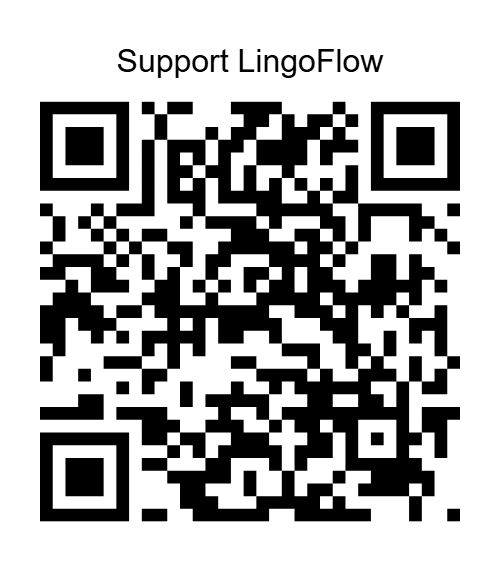

WeChat Appreciation
Scan with WeChat to support LingoFlow.

LingoFlow is free to use. If it helps you read foreign-language websites more comfortably, you can support its development.
Scan with WeChat to support LingoFlow.
For international users.
Your support helps cover development time, translation testing, and ongoing maintenance.
